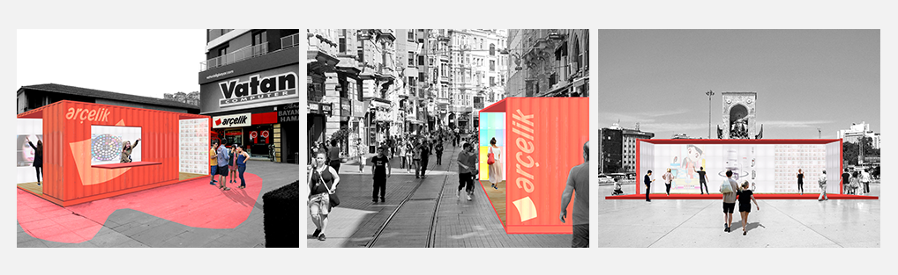
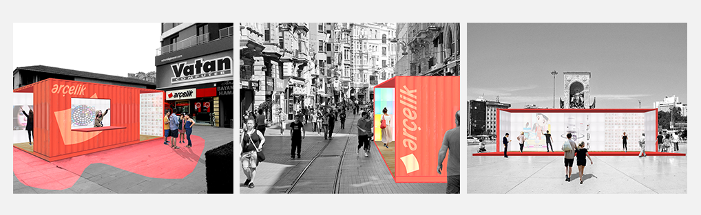

I worked on this project as a part of the Designing Interactions class at Comparative Media Studies department at MIT. The class was sponsored by Arcelik, a Turkey-based household appliances manufacturer. In a team of 3, we conducted research on exciting trends in retail, as well as customers’ pains and desires. Using the findings from our research and interviews, we designed an experience allowing customers to interact with products in fun and interactive ways in a flexible and portable space that would host various events based on the company’s product line. We prototyped and demoed our concept to our peers and sponsors on a weekly basis.
Arcelik is a well-established brand among the older demographic in Turkey. However, millennials don’t find the brand appealing and prefer to shop for appliances online.
We interviewed millennials of different ages and backgrounds, read literature on the demographics and came up with these findings:
As a class, we went to Istanbul to do ethnographic research on Turkish millennials and visited Arcelik stores to identify current design problems and opportunities. We observed that the current advertisement and product display is cluttered and messy (photo on the left). We also saw an opportunity in that some Arcelik stores had spacious yards in front of them (photo on the right) that could be used for organizing events.
Having explored millennials as a demographic, and having looked at the cultural and spatial context of Arcelik stores, we've developed the following solution:
A flexible pop-up space with interactive screens that is activated by selected Arcelik products. These curated events change over time and appeal to different customer groups. The goal of the pop-up store is to create a unique social and retail experience for millennials, while boosting Arcelik’s brand recognition.
Inspired compelling architectural projects, such as Prada Transformer and Puma City, we designed a mobile store out of shipping container parts. This relatively low-cost structure is not only practical in its flexibility, but also appealing to fun-seeking millennials who enjoy innovation and local social gatherings. Arcelik Transformer is designed such that it can be installed in different city contexts and spaces.
 

Since Arcelik has various product lines, we designed the space that would be able to host various product-specific events. For example, movie nights for showcasing Arcelik TV’s, beauty studio events for showcasing personal care products etc.
These journey maps show potential scenarios of inviting the customer into the store for a beauty studio event:
This cyclical journey map shows the different ways of exposing the customers to Arcelik products in fun and engaging ways, as well as building a sense of community among customers.
Gesture controlled interactive screens allow the customers to get familiar with Arcelik products with the help of technology and other customers. 3D display lets visitors examine digital models of items up-close, learn about their various features, and read customer reviews.
If the visitor wants to share the results of their makeover, or just let their friends know about the event that they visited, they can take a selfie and post it on the selfie wall.

As a proof of concept, we made prototypes of the interactive item display and the selfie wall. Both prototypes were demoed in class. We used Leap Motion to enable gesture control for item display and implemented a simple website that allows users to upload their photos in a custom-colored Arcelik polaroid frame with a caption of their choice.